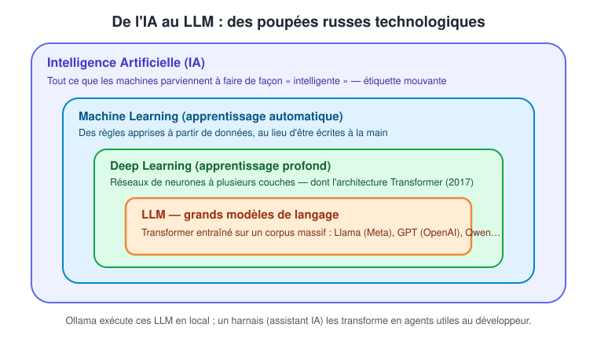
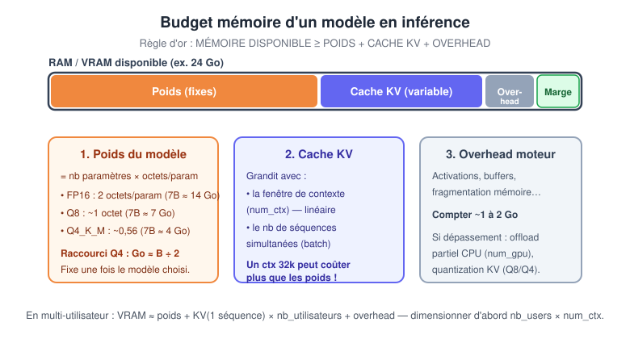
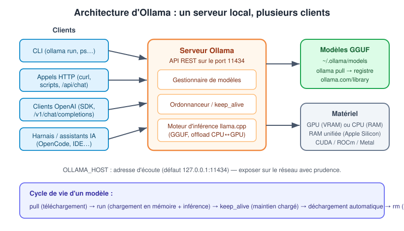

Le programme officiel de la formation (référence Dawan INT102521-F) place cette introduction en ouverture du jour 1 : notions centrales (IA, LLM, GPT, agent), objectifs de la formation et cas d'usage concrets en entreprise. Les sections qui suivent reprennent cet ordre.
Une étiquette mouvante, pas une technologie
« IA » ne désigne pas un objet technique fixe. Le terme décrit ce que les ordinateurs parviennent nouvellement à faire de manière impressionnante — et il glisse à chaque progrès. C'est l'effet IA : dès qu'une technique fonctionne de façon fiable, elle est renommée (« ce n'est que des statistiques ») et l'étiquette « IA » se déplace vers le prochain problème non résolu.
| Époque | Ce que « IA » signifiait |
|---|---|
| Années 1950 | Raisonnement symbolique : démonstrateurs de théorèmes, programmes de dames |
| Années 1960-70 | Programmes fondés sur des règles : ELIZA, SHRDLU |
| Années 1980 | Systèmes experts : des milliers de règles si-alors écrites à la main |
| Années 1990 | Recherche dans un arbre de jeu : Deep Blue bat Kasparov (1997) |
| Années 2000 | Apprentissage statistique : filtres antispam, recommandation — dit « machine learning » |
| Années 2010 | Apprentissage profond : reconnaissance d'images (AlexNet, 2012), AlphaGo (2016) |
| Années 2020 | Grands modèles de langage : ChatGPT (2022) fait d'« IA » le synonyme de chatbot |
Une affirmation comme « l'IA ne peut pas raisonner » porte un horodatage caché : parle-t-on des systèmes experts, des classifieurs des années 2010 ou du LLM du mois dernier ? Chaque référence conduit à une conclusion différente. Quand une discussion technique s'enlise, remplacez « IA » par le terme précis : le modèle, le harnais, l'agent, le contexte fourni.
La chaîne de poupées russes : IA, ML, DL, LLM
Le schéma suivant situe les uns par rapport aux autres les concepts manipulés dans cette formation : l'intelligence artificielle englobe l'apprentissage automatique, qui englobe l'apprentissage profond, dans lequel sont nés les grands modèles de langage basés sur l'architecture Transformer.

Chaque cadre restreint le précédent. Le point pratique pour un développeur : les LLM du cadre central sont des artefacts concrets — des fichiers de poids que l'on télécharge, que l'on charge en mémoire et que l'on interroge. C'est exactement ce que fait Ollama, mentionné en bas du schéma : un exécuteur local de ces modèles, qui les transforme en service interrogeable par les assistants de développement vus au chapitre 2.
Le vocabulaire minimal de la formation
- Transformer : architecture de réseau de neurones introduite en 2017 (« Attention is all you need », Vaswani et al.), fondée sur le mécanisme d'attention. C'est l'algorithme de deep learning communément utilisé par les LLM.
- GPT (Generative Pre-trained Transformer) : famille de modèles fondée sur cette architecture ; le sigle est passé dans le langage courant.
- LLM (Large Language Model, grand modèle de langage) : modèle basé sur l'architecture Transformer, entraîné sur un corpus massif pour générer du texte cohérent et contextuellement pertinent.
- Llama : famille de LLM open source créée par Meta AI — la famille phare exécutée en local via Ollama.
- Ollama : plateforme pour télécharger, exécuter et servir des LLM en local, via un CLI et une API HTTP.
- ChatGPT : produit grand public = un client de chat + un LLM servi par OpenAI. À ne pas confondre avec le modèle lui-même.
- Harnais (harness) : le logiciel qui entoure un modèle pour le rendre utile — outils, prompt système, gestion du contexte, autorisations. Un assistant de développement est un harnais ; le chapitre 2 lui est consacré.
- Agent : un modèle placé dans un harnais, avec des outils et une fenêtre de contexte, qui échange des tours avec un utilisateur. C'est l'entité à laquelle on délègue une tâche.
Un modèle seul ne lit pas de fichiers, n'exécute pas de commandes, ne parcourt pas le Web et ne se souvient pas d'hier. Tout ce qui ressemble à du travail d'agent — choisir des outils, lire des résultats, boucler jusqu'à la fin d'une tâche — est réalisé par le harnais qui orchestre de nombreuses prédictions successives. Attribuer un comportement à « l'IA » sans distinguer modèle et harnais est la première source de diagnostics erronés.
Système expert, machine learning, deep learning : la rupture
Les trois générations se distinguent par l'origine des règles :
- Système expert (années 1980) : les règles sont écrites à la main par des ingénieurs de la connaissance. Fragile, coûteux à maintenir, incapable d'apprendre.
- Machine learning : les règles sont apprises à partir de données d'exemple — le programme ajuste ses paramètres pour minimiser l'erreur de prédiction.
- Deep learning : l'apprentissage passe par des réseaux de neurones à plusieurs couches, où chaque couche extrait des représentations de plus en plus abstraites. Les LLM en sont l'application au langage.
Pourquoi exécuter un modèle en local ?
Avant même de parler d'outils, identifions ce que le local apporte par rapport aux API distantes (OpenAI, Anthropic, Google) :
| Critère | API distante | Modèle local (Ollama) |
|---|---|---|
| Confidentialité des données | Le code et les prompts quittent la machine | Aucune donnée ne sort du poste ou du serveur interne |
| Coût d'usage | Facturation par jeton, à chaque requête | Coût matériel unique ; l'inférence ne se facture pas |
| Disponibilité | Dépend du réseau et du fournisseur | Fonctionne hors ligne, dans un train ou sur un site isolé |
| Capacité des modèles | Modèles de pointe (centaines de milliards de paramètres) | Limitée par la RAM/VRAM de la machine |
| Latence réseau | Aller-retour Internet à chaque requête | Latence réseau nulle |
Le compromis est clair : capacité contre contrôle. Les modèles qui tiennent sur un poste de travail sont bien plus petits que les modèles de pointe distants, mais aucune donnée ne quitte la machine et aucune facturation par jeton ne s'applique.
L'API distante est un taxi : toujours disponible, conduit par quelqu'un d'autre, payé à la course, et les bagages (les données) voyagent avec. Le modèle local est un utilitaire d'entreprise : il dort dans le garage, moins puissant qu'un avion, mais on y charge ce que l'on veut sans que cela regarde personne.
Cas d'usage rencontrés en entreprise
- Assistance au développement sur code confidentiel : un éditeur ou un harnais branché sur Ollama complète et refactorise du code qui ne doit pas quitter le système d'information (défense, santé, banque).
- Pré-traitement de documents internes : extraction d'informations, résumés, classification de tickets — en traitement par lots, la nuit, sur un serveur interne.
- Assistant métier hors ligne : support pour des techniciens terrain sans connectivité garantie.
- Prototypage sans budget API : valider une idée d'agent ou de RAG avant d'engager des coûts par jeton.
- Poste de développeur : brainstorming, génération de tests, explication de code, revues — le fil rouge des chapitres 2 et 3.
Objectifs de la formation
Au terme des trois jours, le stagiaire est capable de :
- comprendre le fonctionnement des modèles LLM open source comme Llama ;
- utiliser Ollama pour exécuter des modèles localement ;
- exploiter efficacement les assistants IA (harnais) dans son environnement de développement ;
- naviguer et coder avec assistance dans un IDE agentique ;
- identifier les cas d'usage pertinents pour chaque outil et les combiner dans son flux de travail.
Le jeton (token) : l'unité atomique
Le modèle ne lit ni caractères ni mots : il lit des jetons (tokens). Un tokenizer doté d'un vocabulaire fixe de dizaines de milliers de fragments découpe toute entrée en séquence de jetons ; la sortie est générée un jeton à la fois.
Ordre de grandeur : un jeton ≈ les trois quarts d'un mot anglais ; 1 000 jetons ≈ 750 mots. Le code est moins prévisible : les mots-clés courants (function) se tokenisent en un seul jeton, tandis que les identifiants inhabituels, les hash et les blobs base64 se divisent en plusieurs jetons par « mot ». Un petit fichier rempli de chaînes inhabituelles peut donc occuper une part surprenante de la fenêtre de contexte.
Tout se compte en jetons : la taille de la fenêtre de contexte, le coût (chez un fournisseur distant), la latence et la vitesse de génération (jetons par seconde).
Les paramètres : le savoir figé du modèle
Un paramètre (ou poids) est un nombre réel appris pendant l'entraînement — le coefficient d'une matrice du réseau. La « taille » d'un modèle s'exprime en milliards de paramètres : 7B, 13B, 70B, 405B…
Deux propriétés essentielles :
- tout ce que le modèle « sait » réside dans ces nombres ; il n'existe ni base de données de faits ni table de recherche à l'intérieur du modèle ;
- les paramètres sont figés après l'entraînement. Rien de ce qui se passe pendant une session ne les modifie : ni correction, ni base de code montrée, ni erreur dont le modèle tirerait une leçon.
C'est pourquoi le modèle est dit sans état (stateless) : la continuité doit venir de l'extérieur — la fenêtre de contexte renvoyée à chaque requête, ou un système de mémoire géré par le harnais (chapitre 2).
Entraînement contre inférence
| Phase | Moment | Ce qu'elle fait | Paramètres |
|---|---|---|---|
| Entraînement | Une fois, avant publication | Produit les paramètres à partir d'un corpus massif | En cours d'écriture |
| Inférence | À chaque requête | Exécute les paramètres figés sur le contexte fourni | Lecture seule |
L'entraînement est une répétition à très grande échelle : on montre un passage de texte, le modèle prédit le jeton suivant, on rapproche les paramètres de la bonne réponse, et l'on recommence sur des milliers de milliards de jetons. Ce processus coûteux est réalisé une fois par le créateur du modèle (Meta pour Llama…). Ce que fait le développeur au quotidien, c'est de l'inférence : exécuter le modèle entraîné — et c'est précisément le rôle d'Ollama.
Deux conséquences pratiques : le modèle a une date limite des connaissances (knowledge cutoff) — il n'a pas vu la version de bibliothèque publiée le mois dernier ; et on ne peut pas « lui enseigner » une API interne — la solution est de placer la documentation dans le contexte, la seule entrée contrôlable.
La prédiction du jeton suivant
Le modèle ne fait qu'une chose : à partir du contexte, calculer une distribution de probabilité sur les jetons possibles, en échantillonner un, l'ajouter au contexte, recommencer. Toute sortie — une phrase, un appel d'outil, un fichier de mille lignes — est construite ainsi, un jeton à la fois.
Ce mécanisme explique trois comportements déterminants :
- Le non-déterminisme : l'échantillonnage comporte une part de hasard volontaire — toujours choisir le jeton le plus probable produirait un texte répétitif et de moins bonne qualité. Le même prompt peut donner deux réponses différentes ; réessayer est une stratégie légitime.
- Les hallucinations : le modèle ne vérifie jamais qu'un jeton est vrai avant de l'émettre, seulement qu'il est probable (détaillé au chapitre 3).
- La vitesse plafond d'un agent : les jetons de sortie sont produits strictement un par un ; la génération impose sa cadence à tout le flux de travail.
Le premier repère : la mémoire disponible
Choisir un modèle, c'est faire tenir trois choses dans une enveloppe mémoire (RAM ou VRAM) :
- les poids du modèle — fixes, fonction du nombre de paramètres et de la quantization ;
- le cache KV — variable, il grandit avec la fenêtre de contexte et le nombre d'utilisateurs simultanés ;
- l'overhead du moteur — activations, buffers, fragmentation : compter 1 à 2 Go.
Le schéma ci-dessous matérialise cette répartition dans une enveloppe de 24 Go : les poids en orange (fixes), le cache KV en violet (variable), l'overhead en gris, et la marge qu'il est prudent de conserver.

La règle d'or à retenir : MÉMOIRE DISPONIBLE ≥ POIDS + CACHE KV + OVERHEAD. Les trois blocs du schéma détaillent les leviers de chaque terme — la quantization pour les poids, num_ctx et le batching pour le cache KV, l'offload partiel quand l'enveloppe déborde.
La quantization : compresser les poids
La quantization réduit la précision de stockage des paramètres : on divise la mémoire au prix d'une légère perte de qualité. Les modèles GGUF servis par Ollama utilisent des niveaux nommés Q8, Q5_K_M, Q4_K_M…
| Précision | Octets / param | 7B ≈ | 70B ≈ | Qualité |
|---|---|---|---|---|
| FP16 / BF16 (natif) | 2,0 | ~14 Go | ~140 Go | référence |
| Q8 / INT8 | ~1,0 | ~7 Go | ~70 Go | quasi identique |
| Q5_K_M | ~0,69 | ~5 Go | ~48 Go | très bon, confortable pour développer |
| Q4_K_M | ~0,56 | ~4 Go | ~40 Go | bon, minimum recommandé |
| Q3_K | ~0,43 | ~3 Go | ~30 Go | dégradation visible |
| Q2_K | ~0,33 | ~2,5 Go | ~26 Go | à éviter sauf contrainte forte |
En Q4, la taille des poids en Go ≈ la moitié du nombre de paramètres en milliards : 7B → ~4 Go, 70B → ~40 Go. En FP16, c'est le double : 7B → ~14 Go. Formule générale : POIDS = NB_PARAMS × OCTETS_PAR_PARAM.
Quelle gamme de modèle selon sa machine ?
Tableau de décision pour un poste mono-utilisateur, en quantization Q4_K_M :
| RAM / VRAM disponible | Gamme réaliste | Exemples de familles | Remarque |
|---|---|---|---|
| ≤ 8 Go | 3B – 8B Q4 | Llama 3.x 8B, Qwen 7B, Phi | contexte modéré (≤ 8k) |
| 12 – 16 Go | 8B – 14B Q4/Q5 | Qwen 14B, Gemma 9B | RAG possible, surveiller le cache KV |
| 24 Go | 14B – 32B Q4 | Qwen 32B, Gemma 27B | le point d'équilibre grand public |
| 48 Go | 32B – 70B Q4 | Llama 70B Q4 | confortable, contexte large possible |
| 2 × 80 Go (serveur) | 70B FP16 / 100B+ | multi-GPU + parallélisme | production multi-utilisateur |
Pour un usage multi-utilisateur, viser une gamme en dessous de ce que la mémoire permet en mono-utilisateur : la mémoire libérée part dans le cache KV multiplié par le nombre d'utilisateurs.
CPU, GPU et RAM unifiée
- CPU / RAM : lent (faible bande passante mémoire) mais grande capacité et bon marché. Viable pour de petits modèles ou un usage non temps réel.
- GPU / VRAM : rapide (forte bande passante) mais capacité limitée et coûteux. Indispensable au temps réel et au multi-utilisateur.
- RAM unifiée (Apple Silicon, certains APU) : CPU et GPU partagent un seul pool mémoire à bonne bande passante. Un Mac 64 Go charge ainsi un modèle qu'aucun GPU grand public ne contiendrait. Ollama exploite ce mode via Metal.
Ollama gère les trois configurations et répartit automatiquement les couches du modèle entre GPU et CPU quand la VRAM ne suffit pas — un offload partiel, pilotable finement avec le paramètre num_gpu (nombre de couches déchargées sur le GPU, 0 = tout sur CPU).
La fenêtre de contexte (num_ctx)
La fenêtre de contexte (context window) est le nombre maximal de jetons que le modèle « voit » à la fois : prompt système + historique + documents + réponse en cours. C'est la seule surface par laquelle le modèle perçoit quoi que ce soit — ce qui n'y figure pas n'existe pas pour lui.
Sa taille maximale est propre à chaque modèle (4k, 8k, 32k, 128k…). Dans Ollama, le paramètre num_ctx fixe la fenêtre effectivement allouée à l'exécution ; la valeur par défaut est volontairement basse (2048 ou 4096 selon les versions) pour ménager la mémoire. Elle se règle par requête (API), par modèle (Modelfile) ou globalement (variable d'environnement).
Une requête transporte toujours la totalité du contexte : le modèle étant sans état, chaque requête renvoie le prompt système, la conversation complète jusqu'alors et les résultats d'outils. La structure typique d'un prompt de chat :
{
"messages": [
{"role": "system", "content": "Instructions permanentes de l'assistant."},
{"role": "user", "content": "Bonjour, pouvez-vous m'aider à coder ?"},
{"role": "assistant", "content": "Bien sûr ! Que souhaitez-vous coder ?"},
{"role": "user", "content": "Un script Python pour trier une liste."}
]
}
Avec le num_ctx par défaut, une longue conversation ou un gros fichier injecté dépasse vite la fenêtre : le début du contexte est tronqué et le modèle « oublie » les instructions système ou le code fourni plus tôt. Symptôme typique : l'assistant contredit une décision prise dix tours auparavant. Remède : augmenter num_ctx — en acceptant son coût mémoire — et charger un contexte pertinent plutôt que massif.
Le cache KV : pourquoi le contexte coûte de la mémoire
Pour ne pas recalculer tout l'historique à chaque nouveau jeton, le modèle mémorise, pour chaque jeton déjà traité, des vecteurs K (clé) et V (valeur) par couche : c'est le cache KV. Il vit en plus des poids, et sa taille suit la formule :
| Facteur | Effet sur le cache KV |
|---|---|
2 × nb_couches × n_kv_heads × head_dim |
Dimension « cachée » réservée à l'attention — dépend du modèle (réduite par la GQA) |
num_ctx |
Coût linéaire en longueur de contexte — dépend de l'usage |
batch (séquences simultanées) |
Coût linéaire — clé du dimensionnement multi-utilisateur |
| Précision (octets) | FP16 = 2 octets ; le cache KV quantifié (Q8/Q4) divise par 2 à 4 |
Quantifier le cache KV est distinct de quantifier les poids : par défaut le cache KV reste en FP16, même avec un modèle Q4. Dans Ollama, c'est la variable OLLAMA_KV_CACHE_TYPE (q8_0, q4_0) qui le pilote.
Ordre de grandeur pour un Llama 3 8B en FP16 : 0,12 à 0,5 Go par tranche de 1 000 jetons de contexte et par séquence. Sur un 70B, c'est plusieurs fois plus. Un contexte de 32k jetons peut coûter plus de mémoire que les poids eux-mêmes.
Mono-utilisateur contre multi-utilisateur : le batching
En mono-utilisateur (poste de travail, agent personnel), une requête à la fois : on optimise la latence d'une seule séquence ; le cache KV total vaut celui d'une séquence. Ollama est taillé pour cet usage.
En multi-utilisateur (API d'équipe, production), N requêtes concurrentes : le batching traite plusieurs séquences dans le même passage GPU, et le cache KV est multiplié par le nombre de séquences actives.
| Mono-utilisateur | Multi-utilisateur | |
|---|---|---|
| Objectif | latence | débit (requêtes/s, jetons/s) |
| Moteur typique | Ollama, llama.cpp | vLLM, TGI, SGLang |
| Mémoire dominée par | les poids | le cache KV × N |
| Technique clé | offload, quantization | continuous batching + PagedAttention |
En multi-utilisateur, ce n'est généralement pas la taille du modèle qui sature la mémoire, mais le cache KV cumulé. Dimensionner d'abord nb_utilisateurs × num_ctx, puis choisir la taille du modèle dans ce qui reste. Dans Ollama, OLLAMA_NUM_PARALLEL fixe le nombre de requêtes traitées en parallèle — et donc le multiplicateur de cache KV.
Les formats de poids
- GGUF : format quantisé de llama.cpp et Ollama (Q4_K_M, Q5_K_M…). Tourne sur CPU et GPU, permet l'offload partiel. C'est le format utilisé dans toute cette formation.
- EXL2 : format d'ExLlamaV2, quantization à bits variables (4.0, 4.65, 6.0 bpw…), GPU uniquement, très rapide en mono-GPU.
- safetensors FP16 / AWQ / GPTQ : formats consommés par vLLM (GPU) ; AWQ et GPTQ sont des quantizations 4 bits orientées serveur.
Comparatif des moteurs
| Moteur | Matériel | Formats | Batching multi-utilisateur | Quand l'utiliser |
|---|---|---|---|---|
| Ollama | CPU, GPU, RAM unifiée | GGUF | basique | Poste perso, démo, prototypage, mono-utilisateur |
| llama.cpp | CPU, GPU, RAM unifiée | GGUF | léger (--parallel) |
Matériel modeste, edge, CPU seul, contrôle bas niveau |
| vLLM | GPU (NVIDIA surtout) | safetensors, AWQ, GPTQ | excellent (continuous batching) | Production multi-utilisateur, API à fort trafic |
| ExLlamaV2 | GPU uniquement | EXL2 | limité | Un seul GPU grand public, latence minimale |
Ollama s'appuie en interne sur le moteur llama.cpp : même mécanique d'inférence GGUF, enveloppée dans un serveur HTTP, un gestionnaire de modèles et un CLI. C'est ce compromis « zéro friction » qui en fait l'outil retenu pour cette formation.
L'arbre de décision du choix de modèle
- Mémoire : pas de GPU ou RAM unifiée Mac → Ollama/llama.cpp (GGUF), modèle limité par la RAM ; un GPU grand public (8–24 Go) → Q4_K_M via Ollama ; plusieurs GPU ou serveur → vLLM avec parallélisme.
- Utilisateurs simultanés : seul → optimiser la latence (Ollama) ; en équipe → dimensionner le cache KV pour N séquences (vLLM).
- Besoin de contexte : court (chat, questions/réponses) →
num_ctx4k–8k ; long (RAG, gros documents) → 32k+, prévoir la mémoire du cache KV, activer la quantization KV. - Capacités spéciales : images → modèle multimodal (Llama Vision, LLaVA, Qwen-VL) avec marge mémoire ; raisonnement complexe → modèle « reasoning » ; sinon un modèle « instruct » classique, plus léger et plus rapide.
Multimodal et reasoning, deux capacités qui coûtent cher
Un modèle multimodal ingère du texte et des images (voire de l'audio). Coût : un encodeur de vision s'ajoute aux poids, et chaque image consomme beaucoup de jetons de contexte — donc de cache KV. Vérifier la compatibilité modèle × moteur avant de choisir : le support de la vision est inégal selon les moteurs.
Un modèle reasoning est entraîné à « réfléchir » avant de répondre : il émet une chaîne de raisonnement, souvent entre balises <think>…</think>, séparée de la réponse finale. Il génère beaucoup plus de jetons — latence accrue, cache KV plus grand, contexte plus large requis. Pertinent pour les maths, la logique et le code difficile ; inutile et coûteux pour de l'extraction, de la reformulation ou du chat simple.
Au-delà d'un seul accélérateur : les parallélismes
Quand un modèle ne tient pas sur un seul accélérateur, ou qu'on cherche plus de débit, on distribue le calcul. Quatre stratégies, souvent combinées — utiles à connaître pour lire une documentation serveur, même si Ollama en mono-poste n'en exploite qu'une version simplifiée :
| Stratégie | Résout… | Découpe | Communication | Multi-nœuds |
|---|---|---|---|---|
| Tensor parallelism | modèle trop gros + vitesse | chaque matrice d'une couche en tranches réparties sur plusieurs GPU | énorme (à chaque couche) — exige NVLink/PCIe rapide | non, intra-machine |
| Pipeline parallelism | modèle trop gros | par blocs de couches (GPU 0 = couches 1–20, GPU 1 = 21–40…) | faible (entre étages) | oui |
| Model parallelism | terme générique : le modèle est partitionné | tensor et/ou pipeline | — | — |
| Data parallelism | débit / nombre d'utilisateurs | aucune : le modèle entier est répliqué, les requêtes sont réparties | nulle entre répliques | oui |
Le data parallelism suppose que le modèle tient en entier sur un seul accélérateur : c'est de la scalabilité horizontale (N répliques derrière un répartiteur de charge), pas une solution au « modèle trop gros ».
Combinaison typique en production : tensor parallelism intra-nœud (entre GPU NVLink d'une même machine) + pipeline parallelism inter-nœuds (entre machines via le réseau) + data parallelism pour répliquer l'ensemble et absorber le trafic. vLLM expose ces réglages (--tensor-parallel-size N, --pipeline-parallel-size N) ; llama.cpp et Ollama répartissent par couches, dans l'esprit du pipeline.
Ce qu'Ollama apporte
Ollama réduit l'exécution locale d'un LLM à trois gestes : télécharger un modèle (ollama pull), le lancer (ollama run), l'interroger (CLI ou HTTP). Sous le capot, c'est un serveur résident qui :
- gère un registre local de modèles au format GGUF, téléchargés depuis la bibliothèque officielle (ollama.com/library) ;
- charge et décharge les modèles de la mémoire à la demande, avec une durée de maintien configurable (
keep_alive) ; - expose une API REST (port 11434 par défaut) et un endpoint compatible OpenAI ;
- répartit l'inférence entre CPU, GPU ou RAM unifiée, avec offload partiel automatique.
Le diagramme suivant montre cette organisation : à gauche les clients (CLI, scripts HTTP, SDK OpenAI, harnais du chapitre 2), au centre le serveur Ollama et ses trois étages — gestionnaire de modèles, ordonnanceur, moteur llama.cpp —, à droite le stockage GGUF et le matériel cible.

Le point clé du diagramme : tous les clients parlent au même serveur. Le CLI ollama run n'est qu'un client de l'API comme les autres — c'est ce qui permet, au chapitre 2, de brancher n'importe quel assistant IA sur Ollama sans rien changer à l'installation. La bande inférieure rappelle le cycle de vie d'un modèle : pull (disque) → run (mémoire) → keep_alive (maintien) → déchargement automatique → rm (suppression du disque).
Installation native
Windows et macOS : télécharger l'installateur depuis la page officielle de téléchargement d'Ollama (ollama.com/download). L'installateur enregistre le serveur comme application de session ; l'API écoute sur http://localhost:11434.
Linux : le script d'installation officiel installe le binaire et le service systemd :
curl -fsSL https://ollama.com/install.sh | sh
Épingler une version précise si nécessaire :
curl -fsSL https://ollama.com/install.sh | OLLAMA_VERSION=0.5.7 sh
Vérification immédiate après installation :
ollama --version
ollama list # vide au premier lancement : aucun modèle téléchargé
ollama run llama3.2 télécharge le modèle (~2 Go en Q4) s'il est absent, puis ouvre une invite conversationnelle. La commande /bye quitte la session. C'est le test de bout en bout minimal : téléchargement, chargement en mémoire, inférence.
Variables d'environnement utiles
| Variable | Rôle | Exemple |
|---|---|---|
OLLAMA_HOST |
Adresse d'écoute du serveur | 0.0.0.0:11434 pour exposer sur le réseau |
OLLAMA_MODELS |
Emplacement des modèles téléchargés | /data/ollama |
OLLAMA_KEEP_ALIVE |
Durée de maintien des modèles en mémoire | 1h, -1 (toujours), 0 (immédiat) |
OLLAMA_NUM_PARALLEL |
Requêtes traitées en parallèle | 2, 4 |
OLLAMA_KV_CACHE_TYPE |
Quantization du cache KV | q8_0, q4_0 |
Ollama n'implémente aucune authentification. Régler OLLAMA_HOST=0.0.0.0 rend le serveur accessible à quiconque atteint le port 11434 — exécution de modèles à volonté, lecture des modèles présents. En entreprise, ne l'exposer que sur un réseau maîtrisé, idéalement derrière un reverse-proxy authentifiant. Par défaut (127.0.0.1), seul le poste local y accède : c'est le réglage à conserver pendant la formation.
Installation Docker et Docker Compose
Ollama est publié comme image Docker officielle (ollama/ollama). Sans GPU :
docker run -d -v ollama:/root/.ollama -p 11434:11434 --name ollama ollama/ollama
En environnement Docker Compose — la configuration retenue pour les ateliers de cette formation :
services:
ollama:
image: ollama/ollama:latest
container_name: ollama
restart: unless-stopped
ports:
- "127.0.0.1:11434:11434"
volumes:
- ollama:/root/.ollama
deploy:
resources:
reservations:
devices:
- driver: nvidia
count: all
capabilities: [gpu]
volumes:
ollama:
docker compose up -d
docker compose logs -f ollama # suivre le démarrage du serveur
Le port est volontairement lié à 127.0.0.1 : Ollama reste accessible depuis le poste hôte (y compris Windows via http://localhost:11434) sans être exposé au réseau local. Le volume nommé ollama persiste les modèles entre deux recréations de conteneur — sans lui, chaque docker compose down effacerait des dizaines de gigaoctets téléchargés.
GPU NVIDIA dans Docker : les prérequis
Le GPU s'utilise dans un conteneur à deux conditions, installées sur l'hôte :
- le pilote NVIDIA de la machine hôte ;
- le NVIDIA Container Toolkit, qui injecte le pilote et les bibliothèques CUDA dans les conteneurs.
# Debian : installer le toolkit depuis le dépôt officiel NVIDIA, puis configurer Docker
sudo apt-get install -y nvidia-container-toolkit
sudo nvidia-ctk runtime configure --runtime=docker
sudo systemctl restart docker
# Test : nvidia-smi doit s'exécuter DANS le conteneur
docker run --rm --gpus all ubuntu nvidia-smi
Sous Windows 11, Docker Desktop s'appuie sur une VM WSL2. Le pilote NVIDIA Windows compatible WSL suffit : le GPU est transmis à la VM automatiquement. Installer en plus un pilote NVIDIA Linux dans la distribution Ubuntu casse la détection du GPU. Vérification dans Ubuntu : nvidia-smi, puis docker run --rm --gpus all ubuntu nvidia-smi. Ne pas installer non plus deux démons Docker (Docker Desktop + Docker Engine dans la VM) : les conflits sont garantis.
Dimensionner la VM WSL2 pour un modèle local
Configuration WSL2 recommandée pour le développement assisté — fichier %UserProfile%\.wslconfig sous Windows :
[wsl2]
memory=48GB
processors=10
swap=12GB
localhostForwarding=true
Appliquer ensuite avec wsl --shutdown. Ne jamais attribuer toute la RAM physique à WSL : Windows doit rester confortable. Ordres de grandeur pour un modèle 27B quantifié Q4 :
| Ressource | Minimum réaliste | Recommandé |
|---|---|---|
| RAM machine | 32 Go | 64 Go |
| RAM attribuée à WSL | 24 Go | 40–48 Go |
| VRAM GPU | 16 Go (quantifié) | 24 Go ou plus |
| Stockage libre WSL | 60 Go | 120 Go |
| CPU attribués | 6 | 8–12 |
| Swap WSL | 8 Go | 12–16 Go |
Un 27B en Q4 occupe typiquement 16 à 20 Go, auxquels s'ajoutent le cache de contexte et l'overhead. Avec seulement 16 Go de RAM totale ou un GPU de 8 Go, l'exécution reste possible partiellement sur CPU — mais les performances seront médiocres. Les projets doivent vivre dans le système de fichiers Linux (~/code/mon-projet), pas sous /mnt/c/..., pour éviter lenteurs et problèmes de permissions.
Le cycle de vie complet en commandes
| Commande | Effet |
|---|---|
ollama pull llama3.2 |
Télécharge le modèle depuis le registre vers ~/.ollama/models |
ollama run llama3.2 |
Charge le modèle en mémoire (le télécharge si absent) et ouvre le chat CLI |
ollama run llama3.2 "prompt" |
Exécution ponctuelle : réponse affichée puis retour au shell |
ollama list |
Liste les modèles présents sur le disque (taille, date, famille de paramètres) |
ollama show llama3.2 |
Affiche les détails d'un modèle : paramètres, template, contexte, licence |
ollama ps |
Liste les modèles chargés en mémoire et leur répartition CPU/GPU |
ollama stop llama3.2 |
Décharge immédiatement un modèle de la mémoire |
ollama rm llama3.2 |
Supprime le modèle du disque |
ollama cp llama3.2 dev |
Duplique un modèle sous un nouveau nom |
Le nom d'un modèle suit la syntaxe nom[:tag] — le tag désigne la variante (taille, quantization). Sans tag, Ollama utilise latest. Exemples : llama3.2 (3B par défaut), llama3.1:8b, llama3.1:70b, qwen2.5:14b. Vérifier le tag exact dans la bibliothèque officielle avant tout pull : un tag erroné renvoie une erreur de manifeste.
ollama ps : lire la répartition CPU/GPU
ollama ps
NAME ID SIZE PROCESSOR UNTIL
llama3.1:8b bcfb190ca3a7 6,2 GB 100% GPU 4 minutes from now
La colonne PROCESSOR indique la part d'inférence exécutée sur le GPU. 100% GPU est l'objectif sur un poste équipé ; 48%/52% CPU/GPU signale un offload partiel — le modèle déborde de la VRAM, la latence s'en ressent. La colonne UNTIL rappelle l'échéance keep_alive au-delà de laquelle le modèle sera déchargé.
Un modèle n'occupe de la mémoire qu'après un premier run (ou une requête API), et la libère après keep_alive (5 minutes par défaut). Sur un poste limité, ollama stop rend la mémoire immédiatement ; sur un serveur sollicité en continu, OLLAMA_KEEP_ALIVE=-1 évite les rechargements coûteux.
Modelfile : figer une configuration de modèle
Le Modelfile est au modèle ce qu'un Dockerfile est à une image : une recette déclarative qui personnalise un modèle de base — prompt système, paramètres d'échantillonnage, fenêtre de contexte.
FROM llama3.2
# sets the temperature to 1 [higher is more creative, lower is more coherent]
PARAMETER temperature 1
# sets the context window size to 4096
PARAMETER num_ctx 4096
SYSTEM Vous êtes un assistant de revue de code. Répondez en français, soyez factuel.
Création et utilisation :
ollama create revue-code -f Modelfile
ollama run revue-code
ollama show revue-code --modelfile # retrouver la recette d'un modèle existant
C'est le mécanisme à retenir pour livrer à une équipe un modèle « pré-configuré » : même base, mêmes paramètres, même comportement, versionnable dans un dépôt Git.
Le CLI conversationnel
ollama run llama3.2 ouvre une invite interactive. Commandes internes utiles :
| Commande CLI | Effet |
|---|---|
/bye |
Quitte la session |
/show info |
Affiche les métadonnées du modèle chargé |
/show context |
Affiche l'occupation courante de la fenêtre de contexte |
/set verbose |
Active l'affichage détaillé (latences, vitesse en jetons/s) |
""" ... """ |
Envoie un prompt multi-ligne (coller du code) |
# en début de ligne |
Ajoute un message au prompt système persistant du modèle |
En mode verbose, la sortie de chaque réponse détaille le temps de chargement, le débit d'inférence (jetons/s) et le nombre de jetons d'entrée/sortie : c'est l'outil de diagnostic immédiat pour comprendre un modèle lent ou un contexte saturé.
L'API REST native
Le serveur expose une API JSON sur le port 11434. Les deux endpoints principaux :
/api/generate — génération de texte à partir d'un prompt brut :
curl http://localhost:11434/api/generate -d '{
"model": "llama3.2",
"prompt": "Explique en une phrase ce qu'est un LLM.",
"stream": false
}'
/api/chat — conversation avec rôles (le format utilisé par les assistants) :
curl http://localhost:11434/api/chat -d '{
"model": "llama3.2",
"stream": false,
"options": { "temperature": 0.2, "num_ctx": 8192 },
"messages": [
{ "role": "system", "content": "Tu réponds en français, de façon concise." },
{ "role": "user", "content": "Quelle est la complexité d'un tri fusion ?" }
]
}'
Les endpoints de gestion complètent le tableau : /api/tags (liste des modèles, pendant HTTP de ollama list), /api/show (détails), /api/ps (modèles chargés), /api/pull (téléchargement), /api/embed (vecteurs d'embeddings pour le RAG).
Le paramètre stream mérite une décision explicite : true (défaut) envoie la réponse jeton par jeton au fur et à mesure de la génération — idéal pour une interface conversationnelle ; false renvoie le JSON complet d'un bloc — préférable pour un script qui parse la réponse. Les options de la requête (temperature, num_ctx, seed, top_p…) surchargent les paramètres du modèle pour cet appel.
Le premier appel après un déchargement paie le chargement du modèle en mémoire (plusieurs secondes). Une requête vide le précharge :
curl http://localhost:11434/api/chat -d '{"model": "llama3.2"}'
À placer dans un script de démarrage d'environnement de développement, juste avant l'ouverture de l'assistant IA.
L'endpoint compatible OpenAI
Ollama expose aussi /v1/chat/completions au format OpenAI. Tout client écrit pour l'API OpenAI fonctionne donc contre Ollama en changeant seulement l'URL de base — c'est le point de branchement des harnais du chapitre 2 :
from openai import OpenAI
client = OpenAI(
base_url="http://localhost:11434/v1/",
api_key="ollama", # requis par le SDK, ignoré par Ollama
)
reponse = client.chat.completions.create(
model="llama3.2",
messages=[{"role": "user", "content": "Dis que c'est un test"}],
)
print(reponse.choices[0].message.content)
L'endpoint gère le streaming, le mode JSON, la vision, les outils (function calling) et le contrôle du raisonnement. Il n'implémente pas certaines fonctions avancées de l'API OpenAI (logprobs, logit_bias, choix multiples) — suffisant pour brancher un assistant, pas pour reproduire un SDK OpenAI complet.
Les paramètres qui comptent au quotidien
Ollama expose les paramètres d'inférence à trois niveaux : dans la requête API (options), dans le Modelfile (PARAMETER), ou via les variables d'environnement du serveur. Les plus utiles en développement assisté :
| Paramètre | Défaut | Rôle pratique |
|---|---|---|
temperature |
~0,8 | Aléa / créativité : 0–0,3 pour du code et du factuel, 0,7–1,0 en conversation, 1,0+ en brainstorming |
seed |
aléatoire | Graine du générateur : mêmes paramètres + même graine = sortie reproductible (tests, démos) |
top_p / top_k |
0,9 / 40 | Troncatures du vocabulaire candidat ; ajuster temperature ou top_p, pas les deux à fond |
num_predict |
infini | Nombre maximal de jetons générés — borne la latence, évite les réponses interminables |
num_ctx |
2048/4096 | Fenêtre de contexte allouée — le levier mémoire/qualité central |
num_keep |
— | Jetons du début de contexte (prompt système) conservés lors d'une troncature |
num_gpu |
auto | Nombre de couches déchargées sur le GPU ; baisser si la VRAM déborde |
num_thread |
cœurs physiques | Threads CPU en inférence CPU ; régler au nombre de cœurs physiques |
keep_alive |
5m | Maintien en mémoire après la dernière requête (0, 5m, 1h, -1) |
use_mmap / use_mlock |
true / false | Chargement mappé sur disque (démarrage rapide) / verrouillage en RAM (pas de swap) |
format |
texte | "json" ou un schéma JSON : force une sortie parsable par programme |
stop |
— | Séquences qui stoppent la génération dès qu'elles apparaissent |
Deux réglages anti-répétition complètent le tableau : repeat_penalty (facteur pénalisant les jetons déjà vus, ~1,1 par défaut — monter à 1,15–1,3 si le modèle boucle) et frequency_penalty / presence_penalty (pénalités appliquées proportionnellement à la fréquence d'apparition / dès la première apparition).
Un seed fixe combiné à une temperature basse rend les sorties reproductibles — précieux pour un test automatisé ou une démonstration. En usage courant de développement, laisser la graine aléatoire : le non-déterminisme est une propriété du mécanisme d'échantillonnage, pas un défaut à supprimer.
Recette : une configuration « développement assisté »
Pour un modèle local branché sur un assistant de code (chapitre 2), la configuration de départ recommandée :
FROM llama3.1:8b
PARAMETER temperature 0.2
PARAMETER num_ctx 16384
PARAMETER num_predict 4096
SYSTEM Vous êtes un assistant de développement. Répondez en français,
de façon concise et factuelle. Citez le code exact, sans commentaire superflu.
temperature 0.2: sorties stables et factuelles, adaptées au code ;num_ctx 16384: de la place pour l'historique de session et les fichiers injectés — vérifier que le cache KV correspondant tient en mémoire (ollama ps) ;num_predict 4096: plafond de génération pour qu'une réponse runaway ne sature pas la fenêtre.
Diagnostic express des problèmes courants
| Symptôme | Cause probable | Correctif |
|---|---|---|
| Première réponse très lente, suivantes rapides | Chargement du modèle en mémoire | Normal ; précharger ou allonger keep_alive |
Réponses lentes en continu, ollama ps montre une part CPU |
VRAM insuffisante, offload partiel | Modèle plus petit, quantization plus agressive, ou réduire num_ctx |
| Le modèle « oublie » les instructions en cours de session | Fenêtre de contexte saturée puis tronquée | Augmenter num_ctx, contextualiser moins mais mieux |
| Le modèle répète des boucles de texte | Échantillonnage trop conservateur ou contexte répétitif | repeat_penalty ↑, temperature ↑ légèrement, presence_penalty > 0 |
| Sortie JSON invalide | Contrainte de format absente | "format": "json" dans la requête + consigne explicite dans le prompt |
| La RAM se remplit et le système swappe | use_mlock activé avec une RAM insuffisante, ou modèles empilés |
Désactiver use_mlock, ollama stop sur les modèles inutilisés |
L'atelier occupe l'après-midi du jour 1. Il déroule le cycle complet sur le poste de chaque stagiaire : installation, téléchargement d'un modèle Llama, conversation CLI, scripting HTTP, personnalisation par Modelfile et mesure de performances. Les six étapes sont progressives ; chacune se valide par une commande de contrôle avant de passer à la suivante.
Étape 1 — Installer et vérifier
Selon le poste du stagiaire (Windows/WSL2, macOS, Linux ou conteneur Docker Compose), installer Ollama en suivant les sections précédentes. Vérification attendue :
ollama --version # ou : docker compose ps (variante conteneur)
curl http://localhost:11434/api/version
Variante conteneur : toutes les commandes ollama ... passent par docker exec -it ollama ollama ....
Étape 2 — Télécharger et inspecter un modèle
Choisir la taille du modèle selon la machine (tableau des gammes) : llama3.2 (3B) pour un poste modeste, llama3.1:8b pour un poste standard.
ollama pull llama3.1:8b
ollama list
ollama show llama3.1:8b # contexte maximal, taille des paramètres, quantization
Étape 3 — Conversation CLI et diagnostic
ollama run llama3.1:8b
>>> /set verbose
>>> Explique la différence entre RAM et VRAM pour l'inférence d'un LLM.
>>> /show context
>>> /bye
Relever dans la sortie verbose : le débit en jetons/s et l'occupation du contexte. Dans un autre terminal, pendant qu'un modèle tourne :
ollama ps # taille chargée, % GPU, échéance keep_alive
Étape 4 — Scripter contre l'API
Écrire un script (Python ou curl) qui interroge /api/chat avec stream: false, temperature: 0.2 et un prompt système imposant une réponse JSON, puis qui affiche la réponse parsée. Points de contrôle :
- la réponse est un JSON valide (utiliser
"format": "json"si le modèle dérape) ; - le temps de réponse s'effondre au second appel (modèle déjà chargé,
keep_alive) ; ollama psmontre le modèle chargé, puis son déchargement après expiration.
Étape 5 — Créer un modèle personnalisé
Avec le Modelfile de la section précédente, créer revue-code, lui soumettre un extrait de code du projet d'un stagiaire et comparer la réponse avec celle du modèle de base non personnalisé. Vérifier la persistance de la configuration avec ollama show revue-code --modelfile.
Le formateur passe cette étape en revue : nom du modèle créé, paramètres visibles dans la recette, écart de comportement avec la base non personnalisée.
Étape 6 — Mesurer et comparer
Dernier geste de la journée : objectiver les performances de son installation. Avec /set verbose actif, relever pour un même prompt :
- le débit de génération (jetons/s) sur le GPU et sur le CPU (forcer
num_gpu 0dans une requête API pour comparer) ; - l'effet d'un
num_ctxdoublé sur la mémoire occupée (ollama psavant/après) ; - l'effet du
keep_alivesur le temps de première réponse.
Ces trois mesures ancrent les formules de la journée dans le réel : le stagiaire constate que le cache KV double avec le contexte, que le CPU plafonne en débit, et que le rechargement d'un modèle coûte plusieurs secondes. Noter les résultats : ils serviront de référence au chapitre 2 pour choisir le modèle branché sur l'assistant de développement.
Chaque stagiaire dispose d'un Ollama fonctionnel, d'au moins un modèle Llama téléchargé, d'un modèle personnalisé créé via Modelfile, et d'un script interrogeant l'API HTTP. Ces quatre éléments sont les prérequis des ateliers du chapitre 2 : le harnais OpenCode se branchera sur cette installation.